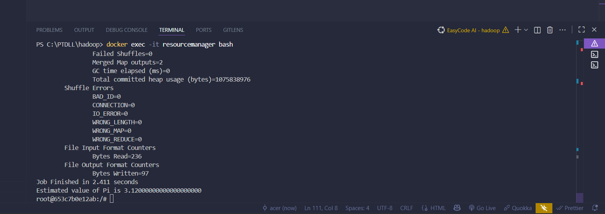

1 Thiết lập Cấu hình (Configuration)
Để Hadoop chạy được trên Docker, cần tạo 2 file quan trọng trong thư mục hadoop/.
A. File docker-compose.yml
Định nghĩa các dịch vụ (Services) và mạng kết nối:
version: "3"
services:
namenode:
image: bde2020/hadoop-namenode:2.0.0-hadoop3.2.1-java8
container_name: namenode
restart: always
ports:
- 9870:9870 # Giao diện HDFS Web UI
- 9000:9000 # Cổng giao tiếp nội bộ
volumes:
- ./hadoop_data/namenode:/hadoop/dfs/name
env_file:
- ./hadoop.env
datanode:
image: bde2020/hadoop-datanode:2.0.0-hadoop3.2.1-java8
container_name: datanode
restart: always
volumes:
- ./hadoop_data/datanode:/hadoop/dfs/data
env_file:
- ./hadoop.env
resourcemanager:
image: bde2020/hadoop-resourcemanager:2.0.0-hadoop3.2.1-java8
container_name: resourcemanager
restart: always
ports:
- 8088:8088 # Giao diện YARN Web UI
env_file:
- ./hadoop.env
nodemanager:
image: bde2020/hadoop-nodemanager:2.0.0-hadoop3.2.1-java8
container_name: nodemanager
restart: always
env_file:
- ./hadoop.env
historyserver:
image: bde2020/hadoop-historyserver:2.0.0-hadoop3.2.1-java8
container_name: historyserver
restart: always
ports:
- 8188:8188
env_file:
- ./hadoop.envB. File hadoop.env (Biến môi trường)
Quy định các thông số kỹ thuật cho Cluster (Bắt buộc phải có file này cùng thư mục):
CLUSTER_NAME=test
CORE_CONF_fs_defaultFS=hdfs://namenode:9000
CORE_CONF_hadoop_http_staticuser_user=root
HDFS_CONF_dfs_webhdfs_enabled=true
HDFS_CONF_dfs_permissions_enabled=false
YARN_CONF_yarn_resourcemanager_hostname=resourcemanager
YARN_CONF_yarn_resourcemanager_address=resourcemanager:80322 Khởi động Hệ thống
Mở Terminal (PowerShell) tại thư mục chứa file cấu hình và chạy lệnh:
docker-compose up -dSau khi khởi động xong, kiểm tra trạng thái các Node tại địa chỉ: http://localhost:9870

Hình 1: Giao diện quản lý tổng quan HDFS (Overview)

Hình 2: Danh sách các Datanode đang hoạt động (Live Nodes)
3 Quy trình Nạp dữ liệu (Data Ingestion)
Bước 3.1: Copy file từ máy thật vào Container NameNode
# Giả sử có file input.txt ở máy thật
docker cp input.txt namenode:/tmp/input.txtBước 3.2: Đưa file lên hệ thống phân tán HDFS
Truy cập vào bên trong container và dùng lệnh hdfs dfs -put:
# Vào terminal của namenode
docker exec -it namenode bash
# Tạo thư mục trên HDFS
hdfs dfs -mkdir -p /user/root/input
# Đẩy file lên
hdfs dfs -put /tmp/input.txt /user/root/input/
# Kiểm tra kết quả
hdfs dfs -ls /user/root/input/4 Kiểm thử khả năng tính toán (YARN)
Chạy thử thuật toán tính số Pi có sẵn trong thư viện Hadoop để đảm bảo ResourceManager hoạt động tốt.
yarn jar /opt/hadoop-3.2.1/share/hadoop/mapreduce/hadoop-mapreduce-examples-3.2.1.jar pi 2 100Kết quả trả về trên màn hình:
Hình 3: Kết quả tính toán MapReduce thành công
Các Lỗi Thường Gặp & Cách Khắc Phục
Hệ thống không cho phép ghi/xóa file, báo đang ở chế độ an toàn.
hdfs dfsadmin -safemode leaveKhông thể kết nối tới ResourceManager hoặc NodeManager khi chạy Job.
docker-compose restartChương trình báo không tìm thấy file đầu vào để xử lý.
hdfs dfs -ls / để soi lại cấu trúc thư mục.